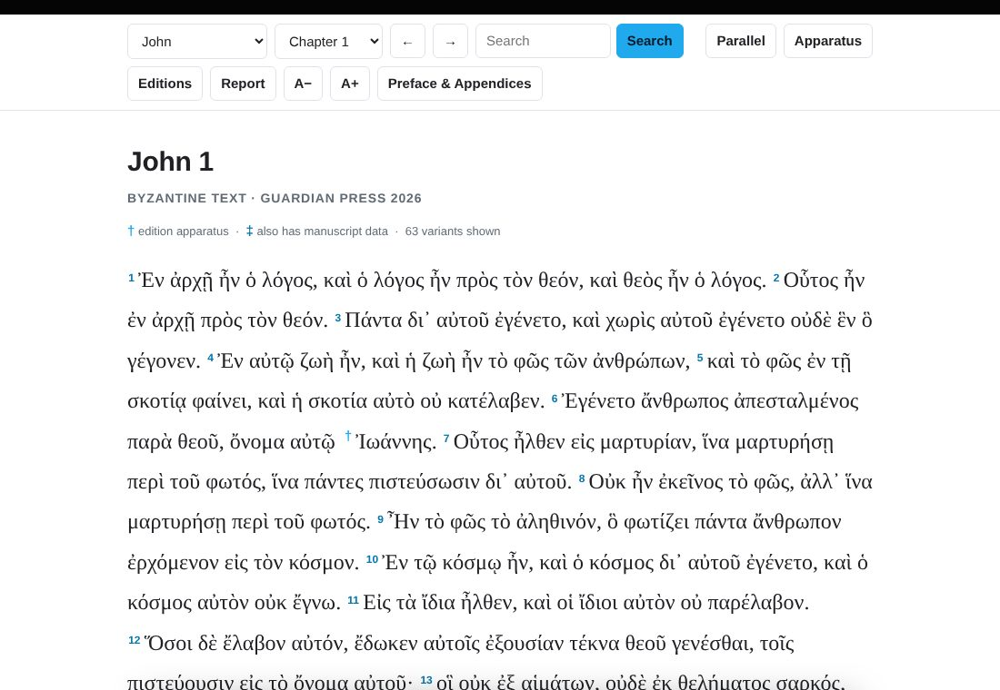
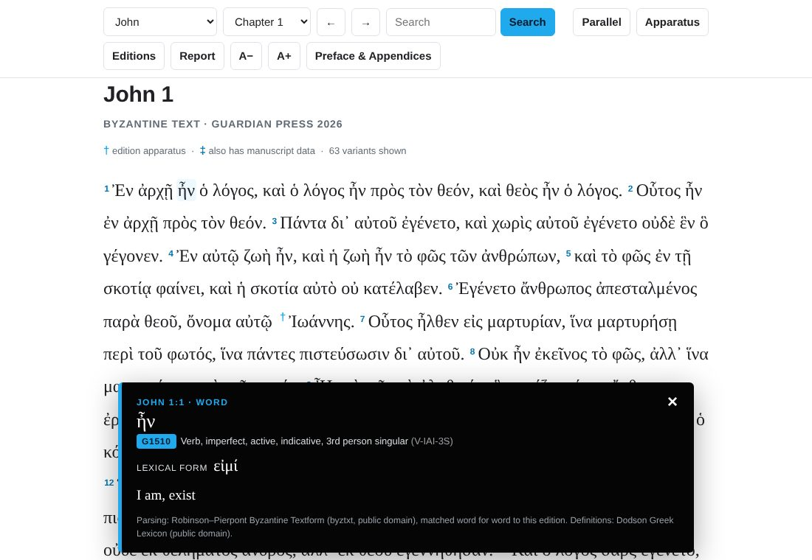
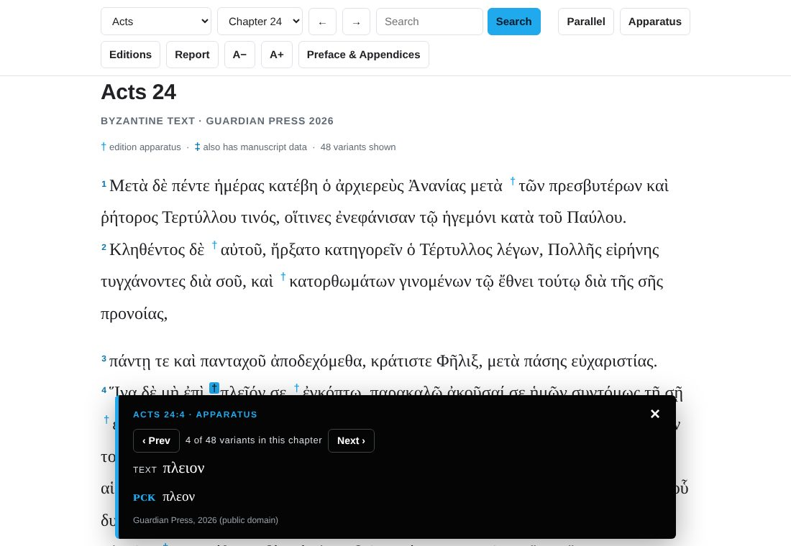
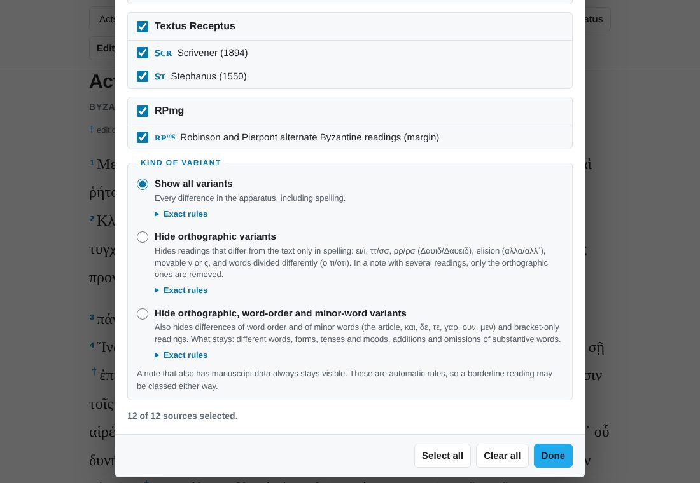
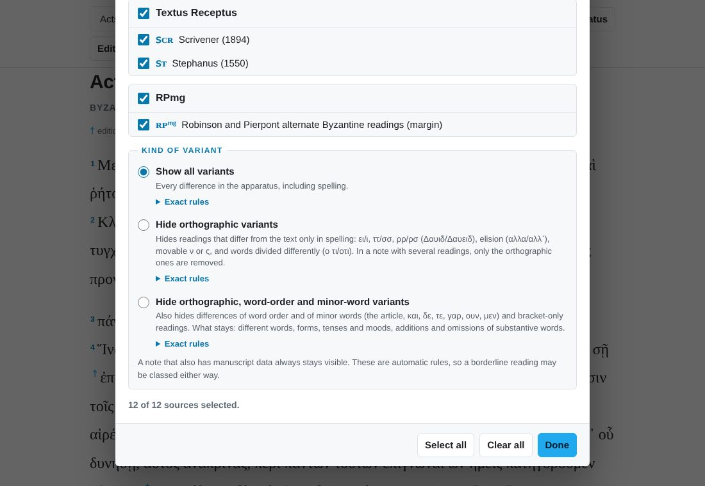
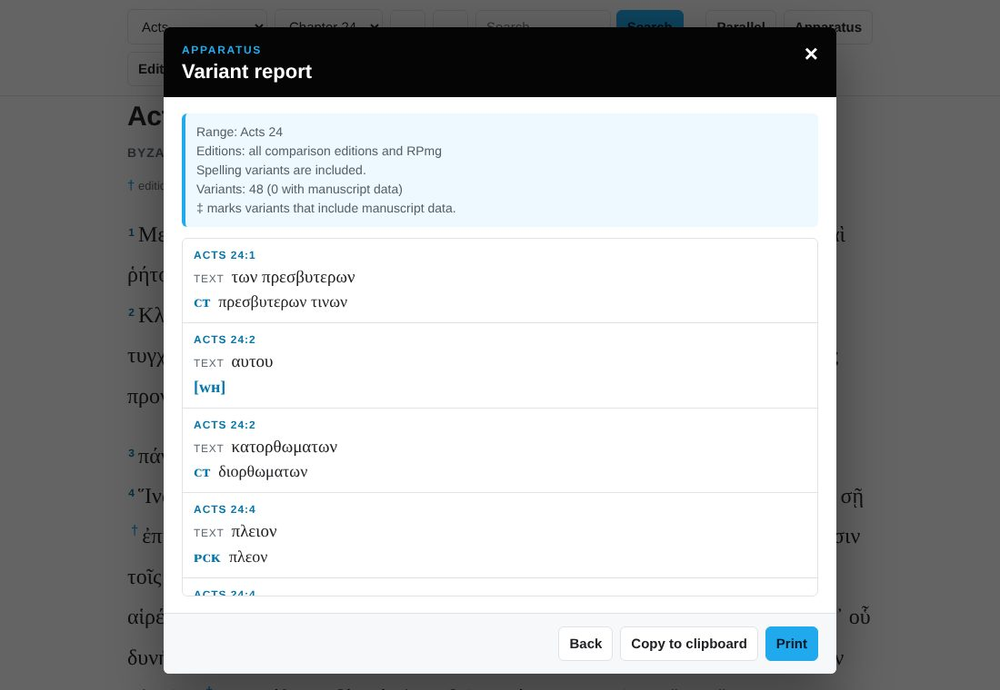
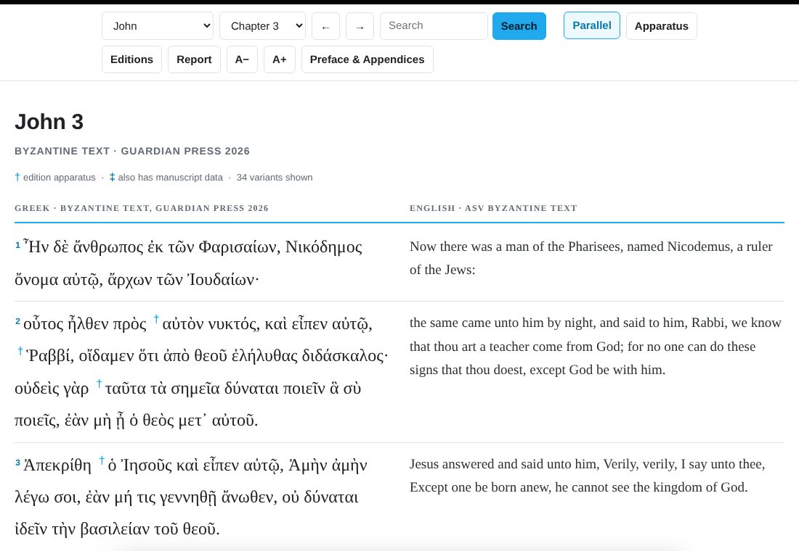

1Quick start
The reader shows The Greek New Testament According to the Byzantine Text (Guardian Press, 2026), one chapter at a time. Nothing to install and nothing to sign in to. It works on a computer, tablet or phone.
- Read. Pick a book and chapter at the top, or use the arrow buttons.
- Tap a Greek word to see its parsing, lexical form, Strong’s number and definition.
- Tap a † to see how eleven other Greek editions read at that spot. A ‡ means the note also lists manuscript evidence.
- Use the toolbar to filter the apparatus, print a variant report, or turn on the English.

3Parsing a word
Tap or click any Greek word. A panel opens at the bottom of the screen with:
- the Strong’s number (for example G1510);
- the part of speech and full parsing, with the short code in brackets (for example V-IAI-3S, a verb, imperfect active indicative, 3rd person singular);
- the lexical form (εἰμί) and a short English gloss;
- a fuller definition when the lexicon has one.

4The apparatus
The Guardian Press edition compares its text with eleven other Greek editions. The reader puts that apparatus right in the line of text.
- A † (dagger) sits before the word or phrase in question. Tap it to open the note.
- A ‡ (double dagger) means that note also carries manuscript evidence: which manuscripts, versions or fathers support each reading.
- The note starts with TEXT, the reading of this edition. Each competing reading then appears on its own line, with the editions that support it in small capitals first.
- The chapter heading counts the variants in the chapter.
- The Apparatus button hides or shows all the daggers if you want a clean page for reading.

5Stepping through variants
With a note open, the ‹ Prev and Next › buttons in the note jump to the previous or next variant. The page scrolls so that the variant is in view, and the note stays open. It shows your position, such as “4 of 48 variants in this chapter”.
- At the end of a chapter, Next carries on into the next chapter that has a variant to show, and Prev does the same going back. You can step through the whole New Testament this way.
- On a keyboard, the ← and → keys do the same thing while a note is open.
- Stepping respects your filters (sections 7 and 8). It visits only the variants you have chosen to see.
6Reading the labels
Editions are named in small capitals. Several editions that agree are often joined under one label.
| Label | Meaning |
|---|---|
| ʜꜰ, ᴘᴄᴋ, ᴘᴛ | Byzantine family: Hodges & Farstad Majority Text (1985), Pickering Family 35 (2020), Ecumenical Patriarchal Text (1912). |
| ᴇᴄᴍ, ɴᴀ²⁷, ɴᴀ²⁸, ꜱʙʟ, ᴛʜ, ᴡʜ | Critical editions: Editio Critica Maior (Mark, Acts, Catholic Epistles and Revelation only), Nestle–Aland 27th and 28th, SBL Greek New Testament, Tyndale House, Westcott–Hort. |
| ꜱᴄʀ, ꜱᴛ | Textus Receptus: Scrivener (1894) and Stephanus (1550). |
| ʀᴘᵐᵍ | The alternate Byzantine readings in the margin of the Robinson–Pierpont text. |
| ᴄᴛ | All the critical editions agree (including ᴇᴄᴍ where it exists). |
| ɴᴀ | Both Nestle–Aland editions agree. |
| ᴛʀ | Both Textus Receptus editions agree. |
| [ ] [[ ]] « » | Brackets around a label mean that edition has the same wording as the text but brackets it as doubtful, for example [ᴡʜ]. Brackets inside a reading are that edition’s own brackets. |
| om. | The listed editions omit the words. |
| italic and superscript | English comments in a note, such as om. and txt, are in italics. In manuscript evidence, the marks attached to a manuscript, such as corrector numbers, asterisks, vid and punctuation, are raised. |
| … (ellipsis) | The variant has two or more separate places in the same verse. |
The full explanation, with worked examples, is in the edition’s own Preface & Appendices, under Special Abbreviations in the Edition Apparatus.
7Choosing editions
The Editions button lets you decide which editions you want to see. This is for the student who only cares how the Textus Receptus differs, or only what the critical text does.
- Tick a whole group (Byzantine family, Critical text, Textus Receptus, RPmg) or pick individual editions.
- The reader splits grouped labels for you. If you keep ɴᴀ²⁸ but not ɴᴀ²⁷, a note labelled ᴄᴛ is shown as ɴᴀ²⁸ ꜱʙʟ ᴛʜ ᴡʜ (only the editions you kept).
- A note disappears when none of your editions is left in it. A reading disappears when none of its editions is selected. A label disappears when you have unticked that edition.
- If you hide ᴇᴄᴍ, readings that only say txt are hidden too. When a reading refers to something you have hidden, the reader adjusts it: “as last ᴇᴄᴍ†” is replaced by the reading itself, and comments such as “cf. last note” are dropped if that note is not showing.
- When a filter is on, the Editions button shows a count such as (3/12), and the line under the chapter heading tells you how many variants are showing out of the total.
- Select all and Clear all do what they say. Your choice is remembered.

8Kinds of variants
At the bottom of the Editions dialog is a choice of how much of the apparatus you want:
| Choice | What you see |
|---|---|
| Show all variants | Every note in the edition, including spelling differences.Exact rulesNo filtering. Every note and every reading in the apparatus is shown (subject to the edition checkboxes above). |
| Hide orthographic variants | Hides readings that differ from the text only in spelling: ει/ι (Δαυιδ/Δαυειδ), ττ/σσ, ρρ/ρσ, elision (αλλα/αλλ’), movable ν or ς, words divided differently (ο τι/οτι), doubled consonants (Ιωαννης/Ιωανης) and name spellings (Μωσης/Μωυσης). In a note with several readings, only the orthographic ones are removed; if all of them are orthographic, the note disappears.Exact rulesHow every filter works
A reading is orthographic only if all of these hold
The six differences allowed in a word
Where ει and ι are not treated as spelling, because there they mark a different form: in the λειπ/λιπ tense stems (απελειπον/απελιπον), in the ειδ/ιδ stems at the start of a word (ειδετε/ιδετε, ειδητε/ιδητε), and at the end of a word, where -ει and -εις against -ι and -ις mark a different form (επει/επι, ερεις/ερις). Where a doubled consonant is not treated as spelling, because there it marks the word: βαλλω, μελλω (εμελεν/εμελλεν), αποστελλω (αποστελει/αποστελλει), αλλασσω, εφαλλομαι (εφαλομενος/εφαλλομενος), and γεννημα against γενημα. Always kept at this level: bracketed readings, accented readings, added, omitted or different words, any change of form (tense, case, number, person), word-order changes, other itacisms such as αι/ε and η/ι, ουκ/ουχ, and Ιεροσολυμα against Ιερουσαλημ, which is a different form of the name rather than a different spelling; that one is hidden only by the next choice. |
| Hide orthographic, word-order and minor-word variants | Hides everything the previous choice hides, and also differences of word order and of minor words (the article, και, δε, τε, γαρ, ουν, μεν) and readings that differ only by brackets. What stays: different words, different forms, tenses and moods, and the addition or omission of substantive words.Exact rulesHow every filter works
A reading is hidden if either test is met
The spelling normalizing used by test 2 is wider than the orthographic rules, because word order is already ignored here: accents, breathings and punctuation removed; final ς as σ; ουθ/μηθ as ουδ/μηδ; ουκ and ουχ as ου; ουτως as ουτω; εξ as εκ; μεχρις and αχρις without the ς; movable ν dropped; ηυ as ευ; ει as ι; γγ γκ γξ γχ as νγ νκ νξ νχ; ν before μ π β φ ψ as μ; ττ as σσ; doubled consonants made single, so Ιωανης matches Ιωαννης; and the name forms Μωυσ- as Μωσ-, Ιεροσολυμα as Ιερουσαλημ, Καπερναουμ as Καφαρναουμ, Δαβιδ as Δαυιδ. Kept even here: any reading that carries an accent or breathing, because there the accent is the variant (μενει/μενεῖ, τινα/τίνα); the λειπ/λιπ and ειδ/ιδ stems and word endings in -ει/-ις, as above; the ν of ουδεν and μηδεν; the doubled lambda of μελλω and αποστελλω (αποστελει/αποστελλει); and of course different words, changes of form, and the addition or omission of any word that is not on the minor-word list. |

9Variant reports
The Report button builds a list of variants you can read, copy or print. It uses the same edition and kind-of-variant choices you have set.
- Choose the passage: the current chapter, the current book, a different book, the entire New Testament, or a custom range (for example Matthew 24:1 to Romans 2:4).
- Choose options: include manuscript data, and write labels in plain capitals (CT, NA28) instead of small capitals if you plan to paste the report somewhere that does not show small capitals.
- Press Create report. The first lines say what the report covers and how many variants it lists.
- Press Copy to clipboard to paste it as plain text, or Print for a clean printed page.

The whole New Testament has more than ten thousand notes, so a full report can be long. Narrow it with the edition and kind-of-variant filters first. Long reports show the first part on screen; Copy and Print always include all of it.
10Comparing editions
The Compare button shows how closely the editions agree with the Byzantine text and with each other.
- Choose the passage (the whole New Testament, the Gospels, Acts, Paul’s letters, the general epistles, Revelation, the current chapter, or any single book) and which differences to count (all of them, or ignoring spelling, or ignoring spelling, word order and minor words, using the same rules as the variant filter).
- The top list ranks each edition by its agreement with the Byzantine text. Select an edition to open it in the comparison below.
- In Compare two editions, pick any two. You see their agreement, then a list of every place they differ with each edition’s reading. Switch the list to the places where the two agree with each other against the Byzantine text. Select a reference to jump to that verse.
- The Every pair grid shows all the pairings at once. Select a cell to compare that pair.
11Parallel English
Press Parallel to put the English beside the Greek, verse by verse. The Greek stays on the left and keeps everything it had: tap-a-word parsing and the apparatus. The English is on the right.
- The English is the American Standard Version adapted to the Byzantine text (ASV-BT), so it follows the same text as the Greek. Adam Boyd’s changes to the ASV were dedicated to the public domain in 2021.
- A few verses that the Byzantine text omits or moves have no English beside them. These are Luke 17:36, Acts 8:37, Acts 15:34, Acts 24:7 and Romans 16:25.
- On a narrow screen the English moves under each Greek verse, marked with a light blue bar on its left.
- The English file loads the first time you use Parallel, so allow a moment. Press the button again to go back to the Greek only. Your choice is remembered.

12Searching
Type in the search box and press Search. The reader finds every verse that contains what you typed and highlights it.
- Accents, breathing marks and final sigma are ignored, so plain letters work: type λογος to find λόγος and λόγον.
- The search matches part of a word, so αγαπ finds every form of the word from that stem.
- Each result is a verse. Tap one to open it in its chapter, highlighted.
- The first 150 results are shown. Make the search more specific to narrow a long list.
- Search looks at the Greek text of this edition. It does not search the English.
13Settings and phones
- Text size. A− and A+ change the size of the Greek (and the English in parallel view).
- Remembered settings. Text size, your place, your edition choices, the kind of variant, Parallel, and the Apparatus on or off are all saved in your own browser. Nothing is sent to a server, and nothing is saved if your browser blocks storage; the reader still works, it just starts fresh each visit.
- Phones and tablets. The toolbar wraps to fit, the apparatus and word panels open at the bottom of the screen, and the parallel English stacks under the Greek.
- Printing a chapter. Use the Report for variants. To have the Greek text itself on paper, download the free PDF editions from the Greek New Testament page.
14Keyboard
| Keys | What they do |
|---|---|
| ← → | Previous or next chapter. While an apparatus note is open, previous or next variant instead. |
| Esc | Close the open panel or dialog. |
| Tab then Enter | Open a dagger or a search result from the keyboard. |
15Where it all comes from
- Text and apparatus: The Greek New Testament According to the Byzantine Text, edited and prepared by J. Jeffrey Dodson and Dwayne Green for the Guardian Press Editorial Committee (Robinson–Pierpont 2026 base text). Dedicated to the public domain.
- Parsing and Strong’s numbers: the Robinson–Pierpont Byzantine Textform from the byztxt project (public domain), matched to each word of this edition.
- Definitions: the Dodson Greek Lexicon (public domain).
- English: the ASV Byzantine Text, adapted from the public domain American Standard Version by Adam Boyd (changes dedicated to the public domain, 2021).
The printed edition, with the full manuscript apparatus, is available from the Hardbound edition page, and the free PDF downloads are on the Greek New Testament page.
16Questions
Why does a word have no parsing?
The parsing data belongs to the Robinson–Pierpont text, and the matching is done by computer. In the few places where this edition reads differently, a word can lack a match, and the word panel says so.
The reader looks different from the printed book. Why?
The apparatus is the same content as the book’s edition apparatus, shown in notes on the screen instead of at the foot of the page. Paragraph breaks follow the edition.
I found a mistake. Whom do I tell?
Please email stephen.biblicalstudies@gmail.com with the book, chapter and verse and what you expected to see. A correction to the reader goes live for everyone as soon as it is published.
Does it work offline?
Not fully. Once the page has loaded, the Greek text and apparatus are already in your browser. The parsing data and the English are fetched the first time you use them, so those need a connection.
Can I link to a verse?
Yes. Tap the verse number, then copy the address from your browser. It looks like excavatingthetext.com/gnt/#Acts/24:2.